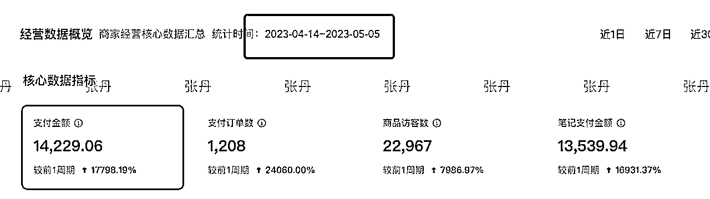
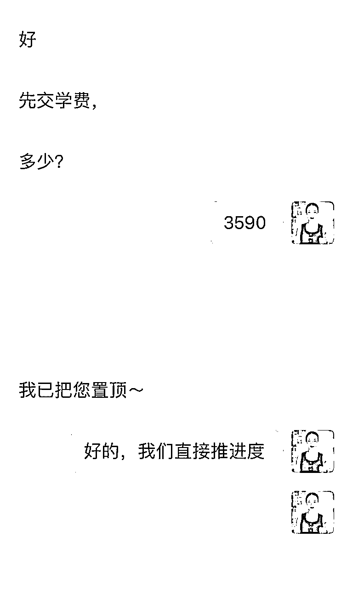
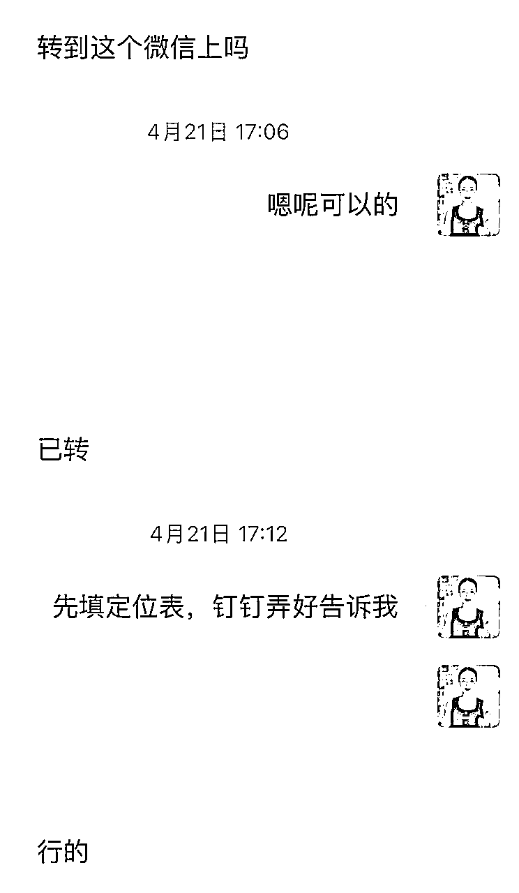
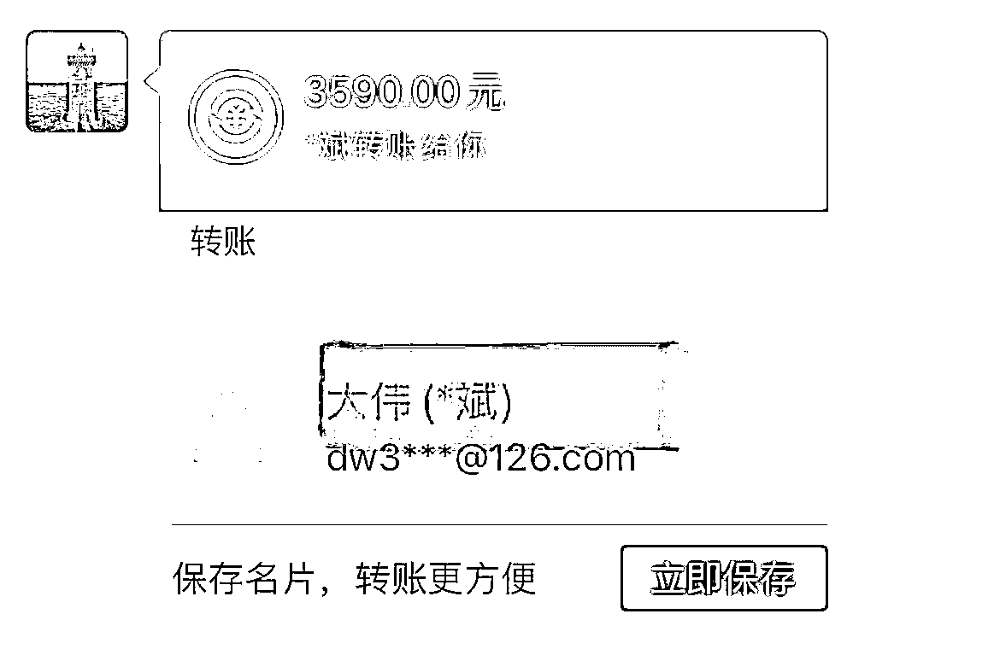
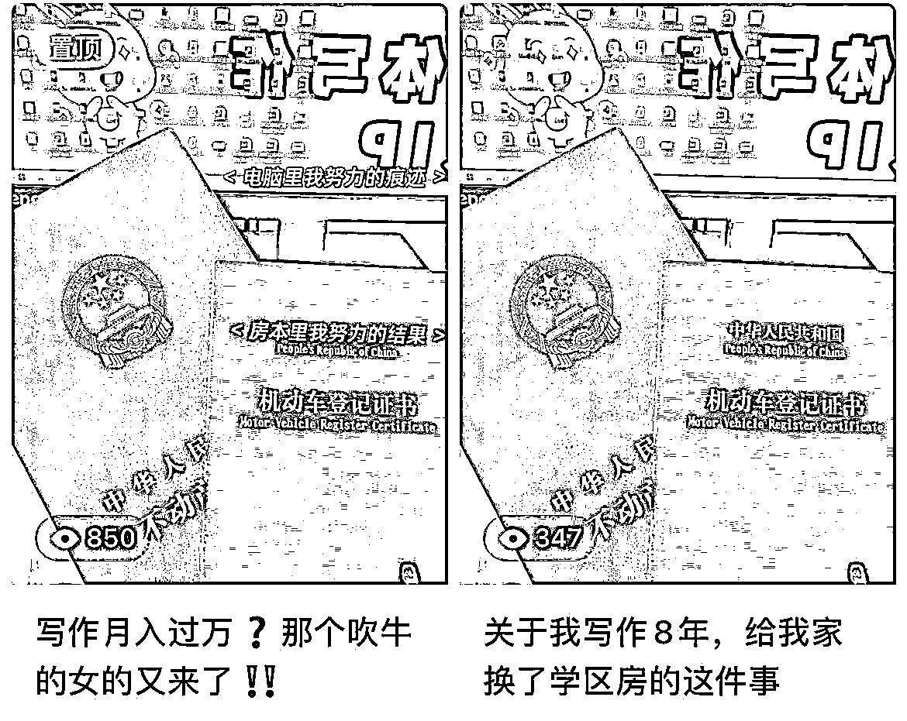

来源：https://h4zarzxodm.feishu.cn/docx/EmnDdCjCUoycIzxivp1cUyHlnHc
大家好，我叫张丹！一个写作8年，挣到大约260w稿费，给我家换了一套学区房的全职妈妈！
我算是非主流妈妈，从来不鸡娃！我的人生目标：好好鸡自己，给我儿打下江山，让我的好大儿当上富二代！
我一直在做副业，写作8年，小红书3年！目前一共做了三个小红书账号：
1、知识付费的写作IP，粉丝量：1.2万
2、无货源电商的，粉丝量：1271
3、一个电商账号，粉丝量：1138
今年小红书电商是趋势所在，所以我会把一半精力放到这两个电商账号上。未来的发展路径是：无货源电商——笔记带货——店群——直播带货——高客单个人IP带货～
电商大号，一共卖了一万多，差价赚了大概一半左右，也就是七千多！

电商小号，卖的不多，大约300块钱，也是50%的利润，大概变现150~
我是22年下半年开始做小红书账号，在此之前，我通过写作也挣了不少钱，我家的学区房，就是用我稿费换的，我老公要求房产证写我一个人名字。
我15年辞职，从郑州来到大连，结婚怀孕生娃，哺乳期的时候我尝试在大连找工作，因为我是一个妈妈，因为我在大连的工作经验为0，海投简历，一个面试电话也没有收到~
找不到工作，再加上刚开始独立带娃！我那段时间几乎天天哭，每天就是洗衣服做饭，孩子饿了渴了，拉了哭了，就这么点事儿，把我的时间消耗殆尽！
我知道，再这么下去，我肯定会抑郁的！我真的超级不甘心，这辈子只能当个家庭主妇！这种日子在我眼里，根本就不值得过！
我开始折腾副业，拼命从自己身上找能打的点！经过几轮试错，我发现我能写作！
然后我开始写网文，投稿公众号，写约稿，找到正确的写作方向之后，我一个月的稿费收入差不多有3w~5w！
我的写作需求大部分来源于私域客户，需求量还行但不够稳定！
而且写作真的非常累，哪怕客户给我千字2000，我只要不写，一毛钱都没有。而且要经常熬夜到半夜，也经常早上三四点爬起来写稿，头发大把大把地掉。那时候我想，我应该转型，有没有一份事业，让我不那么累地挣钱！
疫情之后，各行各业的广告投放量锐减，我一个写广告的，肯定受影响！当我一个月只能挣1w块的时候，我知道我必须转型！
当时，我跟一些百万级别的博主有合作，早早切入小红书。了解这个平台越深，越坚定，小红书太能挣钱了。我的客户有个护肤博主，一百多万粉丝，在小红书纯接广告，在广州买了一套大平层，我超级羡慕，也坚定了去做小红书的决心。
我开始一边写作代运营，一边做账号，一直走到今天！现在，我的账号变现都不错，大号做知识付费，两个小号接广告做无货源！
我做小红书，还算顺利，之前一直在帮别的博主代运营，自己做账号的时候规划很清晰！
接下来跟大家分享一下我的运营经验：
我找定位用的是四象限法，综合考量自己的职务职位、特长爱好、性格特点、口碑评价。同时考虑拿出来的这些点是否具有利他价值！
举例说明：
我的职位职务：自由撰稿人
我的特长爱好：文案写作、账号运营
我的性格特征：敢想敢干、执行力强、不内耗不焦虑，高能量
我的口碑评价：认真负责，文笔好，配合度高
那么我的写作IP定位：写作8年，变现百万的自由撰稿人
我的利他价值：我可以帮写作新手挣稿费
我的护肤小号的定位：自学护肤知识战痘成功的护肤成分党
我的利他价值：帮助痘肌学会护肤知识成功战痘
定位确定之后，就围绕着自己的IP定位做内容，我是一个写作IP，就从小红书站内搜索5个跟自己经历类似的写作IP对标！
跟我们赛道相同的对标账号很多，怎么筛选呢？我一般选看着顺眼的账号，我们三观大概一致，模仿她更能出成绩～
把对标账号的笔记从第一篇到最新一篇大致看一遍，了解她的内容怎么更新迭代的；然后，分析他们的起号关键爆款是哪一篇，分析爆款要素，尝试在自己的内容中复刻。
爆款是一个概率问题，所以我除了看对标爆款，还会在平台搜索关键词，找爆款。只要是爆款笔记，不管是不是对标账号出的，我都会参考。
我是一个写作IP，我给自己规划了文案干货/写作变现/自媒体运营三个版块，这样版块化做账号，不容易断更，文案干货写不出来，就写写作变现，写作变现写不出来，就写自媒体运营，这个版块化的内容思路推荐给大家！
做小红书起号不难，目标明确+坚定执行，最后的结果都还不错！
我从图文转到视频之后，粉丝增长速度还不是特别快！复盘一下自己的内容，感觉自己人设太弱了！我不是清华北大，985/211，别人凭什么听你讲写作变现呢？没人愿意听一个nobody讲道理！
想下我自己目前最大的成就，就是我家的学区房是我用稿费换来的！我就在小红书笔记和朋友圈勇敢晒出去，转粉情况立马好转，向我付费咨询的学员也多了起来！



如果我们没有学历履历的硬背书，我们就去加软背书，晒房晒车晒钱，用户会感兴趣的！

除了晒软背书，我还建议大家今年要勇敢开直播！直面用户，有啥说啥，让用户感受到你是一个活生生的人，一个在写作上拿结果的人，也有利于涨粉转化！
关于无货源电商，很多朋友可能有以下几个方面的问题。
我的选品思路很简单，刚需+有趣！刷短视频的时候，看到这个产品很有意思，拍出了新奇特的感觉，我想到我家也是有一个类似的东西，大概搜一搜在抖音和小红书的热度很高，我觉得它是一个爆品，想要尝试一下。
选品和人设不打架，我没考虑。我用我的护肤小号直接转的无货源，只要用户画像是女性为主，我觉得其他的因素，刚开始做没必要考虑。
我是在1688找的品，咨询了卖家退货地址之类的信息。目前出单量不多，等爆单，我会跟店家要一个批发价！1688代发没有那么bug，很多选拼多多代发的小伙伴，客户下单被发了拼多多信息，导致退单售后，所以我推荐大家用1688！
用了达客宝商品搬家，比较方便，而且达客宝的免费试用周期是三周，最长的
发货挺顺利的，1688下单之后，出了运单号直接去小红书复制粘贴就好了！
我选品的时候考虑得很清楚，不会去选那种区分尺码和讲究个人审美的产品，这种售后概率会更高！我选的就是一个标准化生活用品，所以目前没有出现售后问题！
建议大家不要选服装，需要看尺码还要看个人审美眼光，退货率极高！
我写作能坚持8年，挣到260w+的稿费，我做小红书能做三个都能变现的账号，主要靠我的执行力。我很少去犹豫，纠结，内耗！想到一个方法，我一定会去做！
我昨天晚上想到一个无货源的新思路，晚上七点半跑到我姐家做实名认证，今天早上就出单，不会多犹豫一秒！
最后，送给大家一句，我很喜欢的话：空想误事，实干发家！
希望每个正在做小红书的小伙伴，不要犹豫，坚定执行，在小红书上多多挣钱！